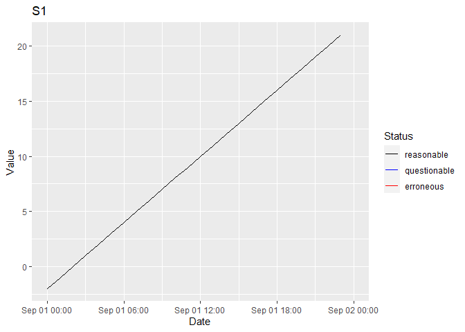

tsdbr is designed to create, populate, maintain and query SQLite databases of environmental time series data.
Utilisation
library(tsdbr)
conn <- ts_create_db(":memory:")
options(tsdbr.conn = conn)
ts_add_parameter("discharge", "cms")
ts_add_site("Niagara Falls")
ts_add_station("S1", "discharge", "Niagara Falls", "hour")
data <- data.frame(Station = "S1", DateTime = ISOdate(2000, 9, 1, 0:23),
Recorded = 0:23 - 2,
stringsAsFactors = FALSE)
ts_add_data(data)
data <- ts_get_data(start_date = as.Date("2000-09-01"),
end_date = as.Date("2000-09-02"))
print(head(data))
#> # A tibble: 6 x 11
#> Station DateTime Recorded Corrected Status Site Depth Parameter
#> <chr> <dttm> <dbl> <dbl> <ord> <chr> <dbl> <chr>
#> 1 S1 2000-09-01 00:00:00 -2 -2 reaso… Niag… NA discharge
#> 2 S1 2000-09-01 01:00:00 -1 -1 reaso… Niag… NA discharge
#> 3 S1 2000-09-01 02:00:00 0 0 reaso… Niag… NA discharge
#> 4 S1 2000-09-01 03:00:00 1 1 reaso… Niag… NA discharge
#> 5 S1 2000-09-01 04:00:00 2 2 reaso… Niag… NA discharge
#> 6 S1 2000-09-01 05:00:00 3 3 reaso… Niag… NA discharge
#> # … with 3 more variables: Units <chr>, StationName <chr>, Comments <chr>
ts_plot_data(data)
Installation
To install the latest version from GitHub repository
# install.packages("remotes")
remotes::install_github("poissonconsulting/tsdbr")Code of Conduct
Please note that the tsdbr project is released with a Contributor Code of Conduct. By contributing to this project, you agree to abide by its terms.